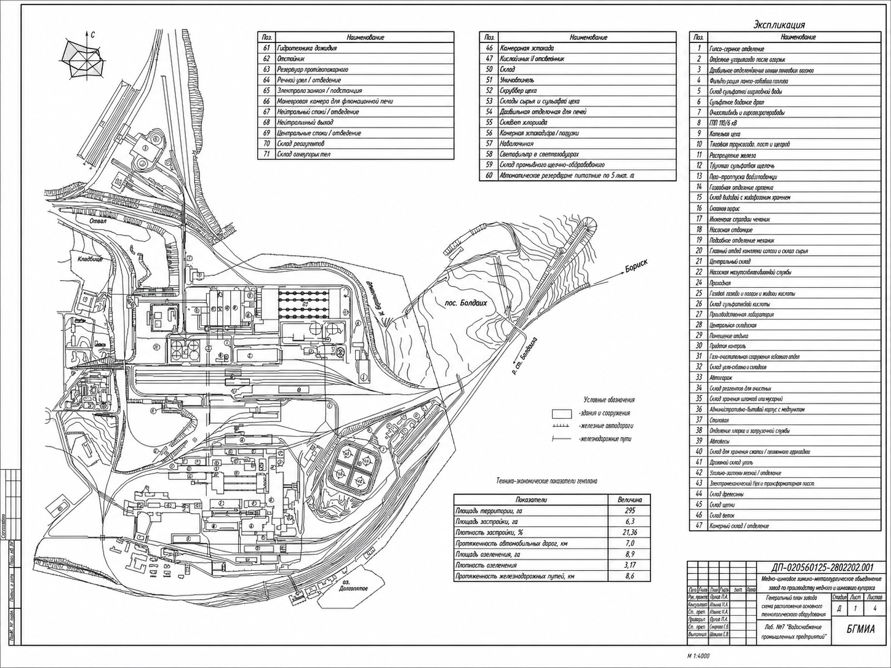
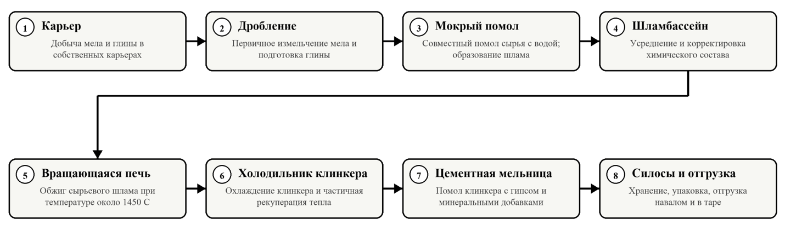
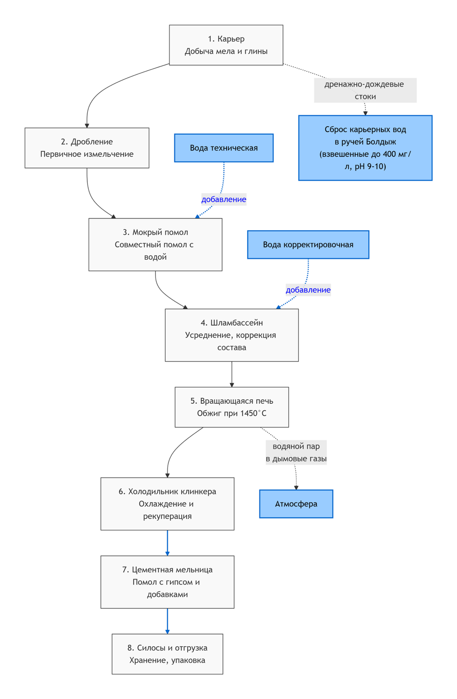
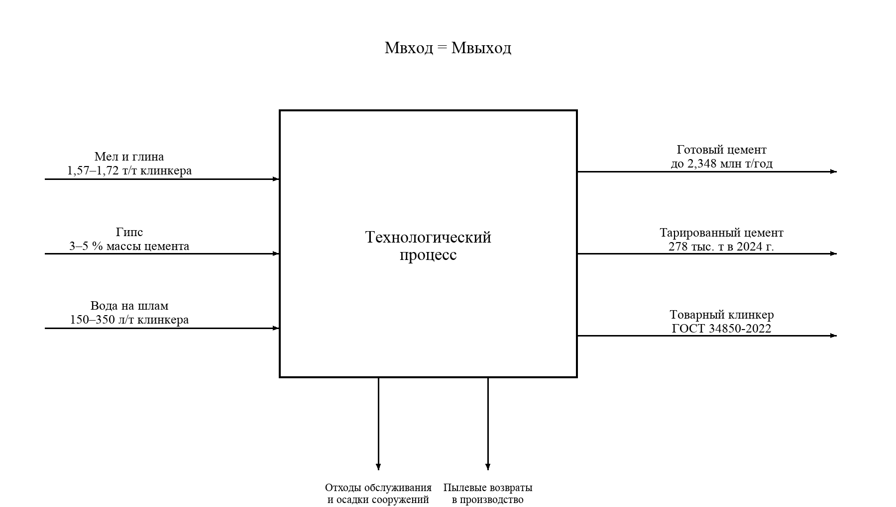
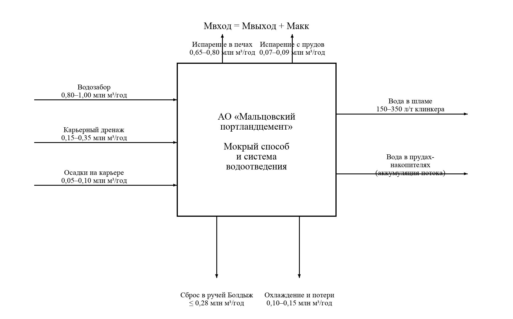
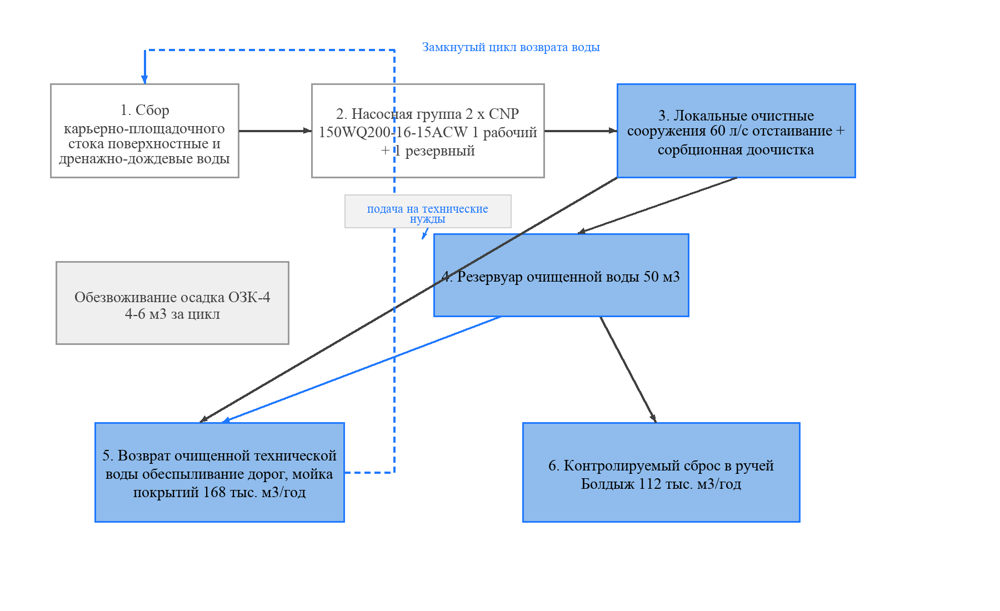
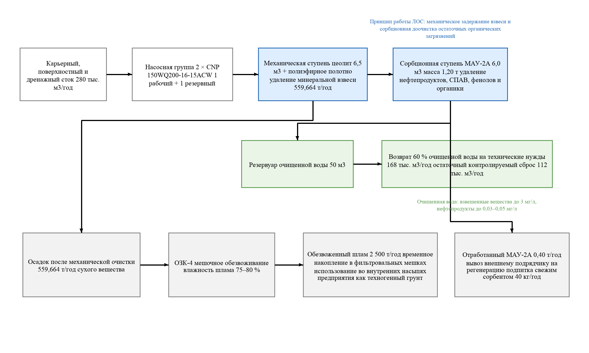
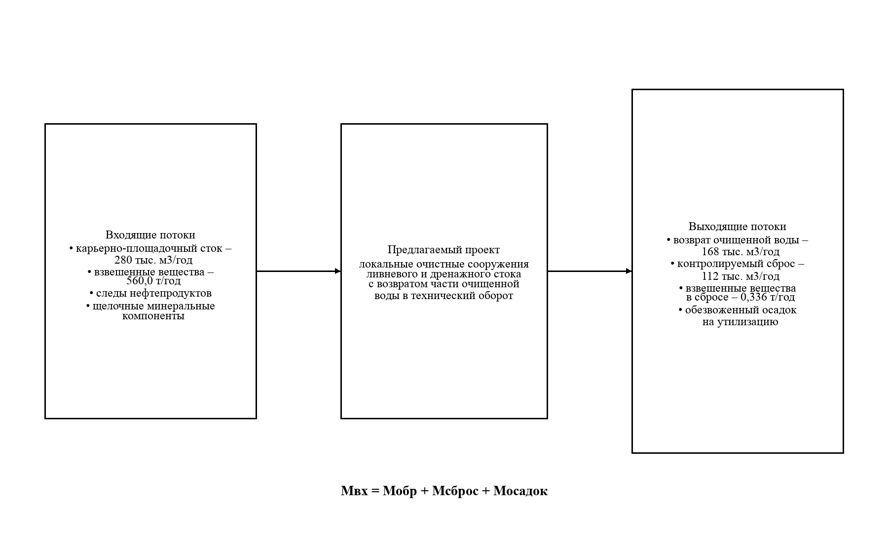
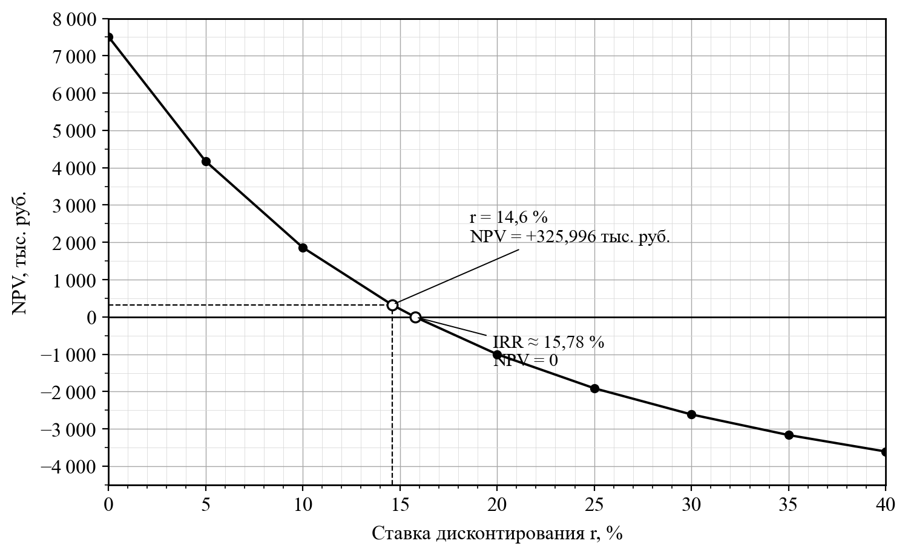

Курсовая работа по дисциплине «Инновационные подходы к созданию чистых производств»


Карьерные, поверхностные и дренажно-дождевые воды → отстойник → пруды → ручей Болдыж.
Болдыж — водоём рыбохозяйственного значения.



Технологическая вода, осадки, дренажные стоки.
Испарение в печах, сброс в Болдыж, испарение с прудов.
Главный источник — карьерно-площадочный контур.



| Ливневые ОС 60 л/с | 2 896 тыс. руб. |
| Насосная группа | 796 тыс. руб. |
| Резервуар 50 м³ | 1 049 тыс. руб. |
| Станция дозирования + ОЗК-4 | 153 тыс. руб. |
| Монтаж, ПНР, ПИР, резерв | ≈ 2 251 тыс. руб. |
| Итого I₀ | 7 144 тыс. руб. |
| Реагенты, электроэнергия | — |
| Заработная плата | — |
| Обслуживание и амортизация | — |
| Итого OPEX | 651 тыс. руб./г |
| Удельные OPEX | 2,32 руб./м³ |
CAPEX и OPEX по проектным сметам и средневзвешенным ценам 2025 г.7–18

Готовы ответить на вопросы